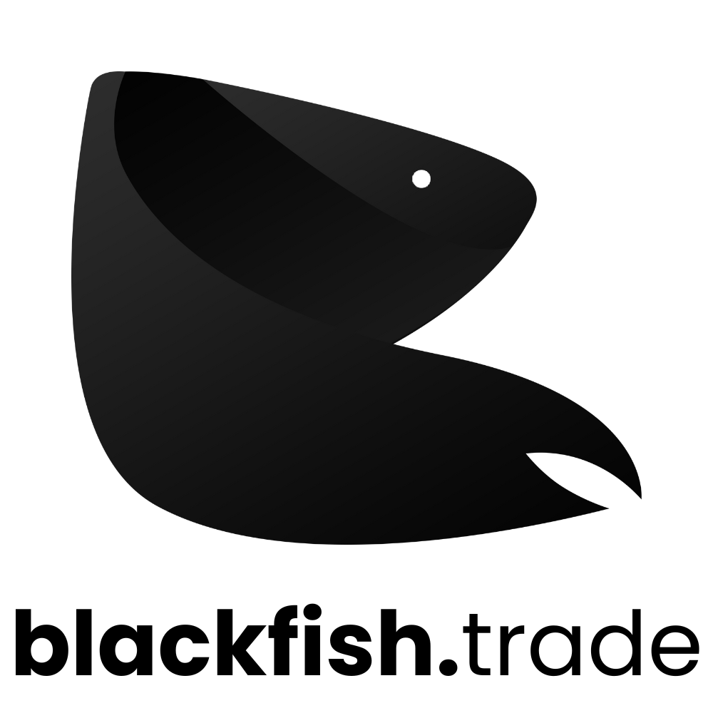

tecnologia inteligente para trading
monitoring
monitoramos comportamentos de indices, ativos financeiros e commodities para identificar oportunidades em opções, mercado futuro e spot.
grid trading
automação de negociações em mercados tradicionais e blockchains por meio de algoritimos de grid trading + bias.
agro commodities
analisamos o mercado de commodities agrícolas em busca de oportunidades para operações de hedge ou alavancagem.